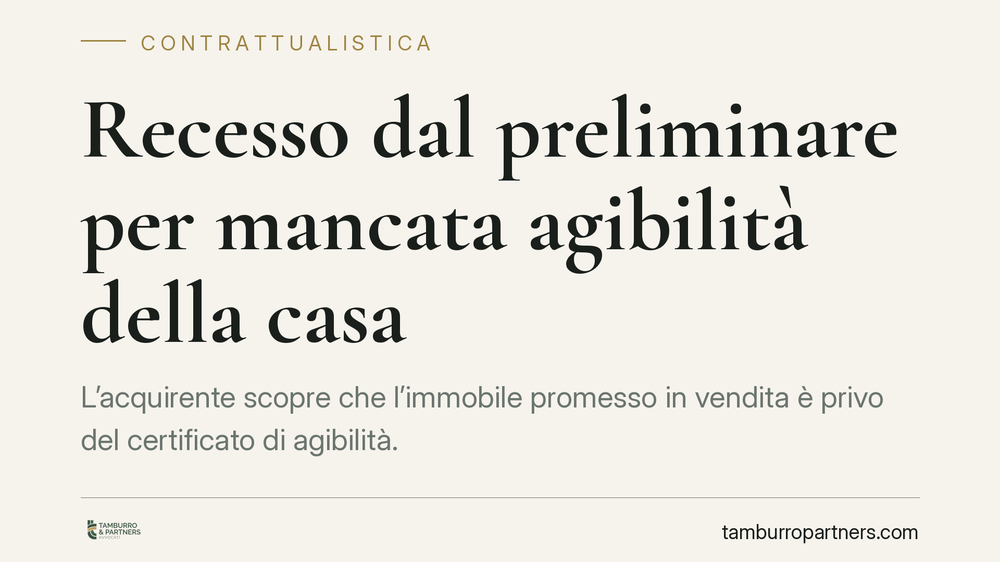

Recesso dal preliminare per mancata agibilità della casa
L'acquirente scopre che l'immobile promesso in vendita è privo del certificato di agibilità. Può sottrarsi al rogito o pretendere la restituzione della caparra? La risposta dipende dalle clausole del preliminare e dalla portata del documento mancante. Analizziamo il quadro normativo e le tutele riconosciute al promissario acquirente.

Il problema
Il certificato di agibilità attesta che l'immobile rispetta i requisiti di sicurezza, igiene, salubrità e risparmio energetico previsti dalla legge. Non è un dettaglio burocratico: senza di esso l'immobile, pur esistente, non può essere legittimamente utilizzato per la funzione a cui è destinato.
Capita spesso che il promissario acquirente (chi si impegna a comprare con il preliminare) scopra la mancanza del certificato solo a ridosso del rogito. La domanda è se questa carenza consenta di rifiutare la stipula del contratto definitivo o di sciogliere il vincolo assunto.
Inquadramento normativo
Il riferimento centrale è l'art. 1477 c.c., che impone al venditore di consegnare i documenti relativi all'uso della cosa venduta. La giurisprudenza della Cassazione ha chiarito che il certificato di agibilità rientra tra questi documenti essenziali: la sua assenza incide sulla stessa possibilità di godimento del bene secondo la destinazione pattuita.
Entra poi in gioco l'art. 1460 c.c., che disciplina l'eccezione di inadempimento. Nei contratti con prestazioni corrispettive, chi deve eseguire la propria prestazione può rifiutarsi di adempiere se l'altra parte non adempie o non offre di adempiere la propria. Il promissario acquirente può quindi rifiutare di presentarsi al rogito e di versare il saldo finché il venditore non fornisce il certificato o non dimostra di poterlo ottenere.
Quando il preliminare è assistito da caparra confirmatoria (art. 1385 c.c.), l'inadempimento del venditore consente all'acquirente di recedere e di pretendere il doppio della somma versata. Se invece è l'acquirente a essere inadempiente, il venditore trattiene la caparra ricevuta.
Implicazioni pratiche
La Cassazione tende a considerare la mancanza del certificato di agibilità un inadempimento del venditore, in quanto compromette la commerciabilità e l'utilizzo del bene. Non si tratta però di una regola automatica.
Rilevano due elementi. Il primo è la gravità: l'inadempimento deve essere tale da non giustificare, secondo buona fede, il rifiuto dell'altra parte di eseguire la propria prestazione. Una carenza puramente formale, sanabile in tempi brevi, potrebbe non legittimare lo scioglimento del vincolo. Il secondo è il contenuto del preliminare: se le parti hanno espressamente subordinato la vendita alla consegna del certificato, la tutela dell'acquirente è più solida.
Attenzione anche alla consapevolezza. Se l'acquirente ha accettato di acquistare un immobile dichiaratamente privo di agibilità, magari a un prezzo ridotto, difficilmente potrà poi invocare la stessa carenza per liberarsi dal contratto.
La distinzione tra recesso e risoluzione non è neutra. Il recesso ex art. 1385 c.c. consente di chiudere rapidamente la vicenda incassando il doppio della caparra, senza dover provare l'entità del danno. La risoluzione per inadempimento, invece, apre alla richiesta di risarcimento integrale, ma richiede la dimostrazione del pregiudizio subito.
Cosa fare in concreto
- Verifica le clausole del preliminare. Controlla se la consegna del certificato di agibilità è stata prevista come condizione o come obbligo del venditore prima del rogito.
- Formalizza per iscritto. Diffida il venditore a produrre il certificato entro un termine congruo, indicando le conseguenze in caso di mancato riscontro. Le comunicazioni verbali non lasciano traccia.
- Non versare il saldo al buio. Se manca il documento, valuta di sospendere la propria prestazione invocando l'eccezione di inadempimento, senza recedere prima di aver chiarito la posizione.
- Documenta la carenza. Conserva ogni evidenza dell'assenza del certificato e delle richieste rivolte alla controparte: sarà materiale utile in un eventuale contenzioso.
- Fatti assistere prima di agire. La scelta tra recesso, risoluzione ed esecuzione in forma specifica dipende dai fatti concreti e produce effetti economici diversi. Consigliamo una valutazione preventiva prima di formalizzare qualsiasi rinuncia.
---
*Contributo informativo a cura di Tamburro & Partners - Avv. Giuseppe Tamburro. Non costituisce parere legale.*
Ogni contratto ha il suo equilibrio.
Se vuoi una revisione delle clausole o una redazione su misura, scrivi allo studio. Ti rispondiamo entro un giorno lavorativo.